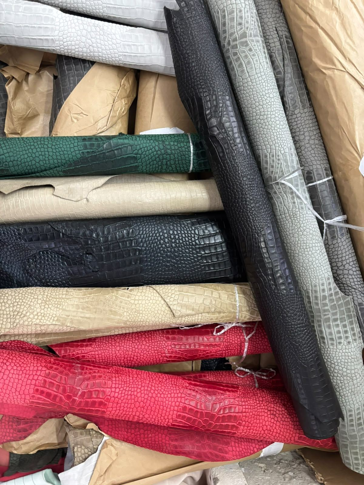
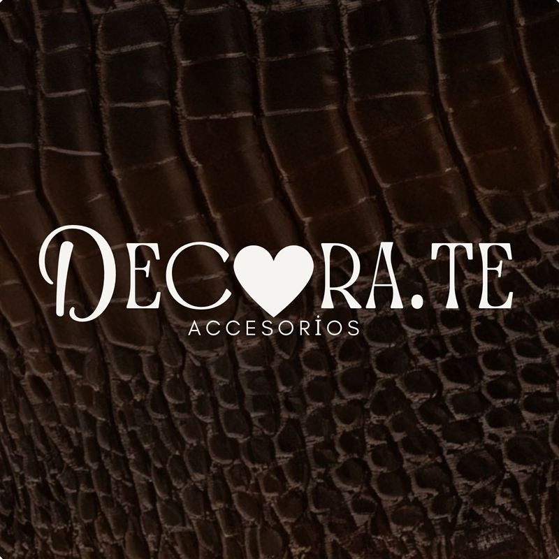
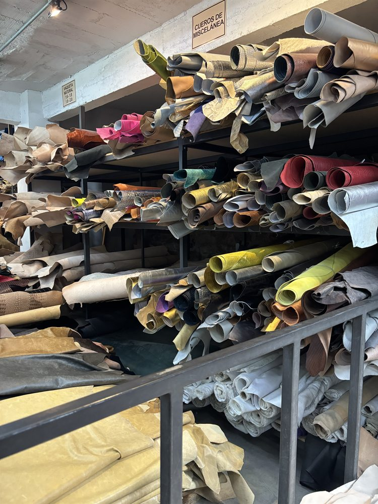
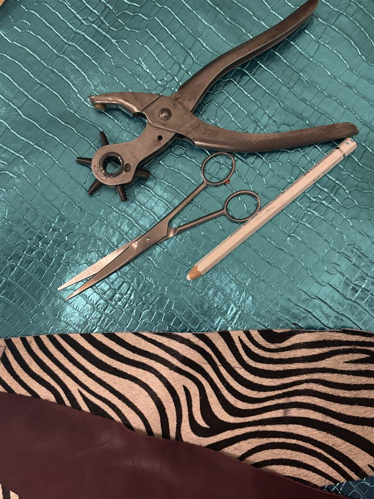
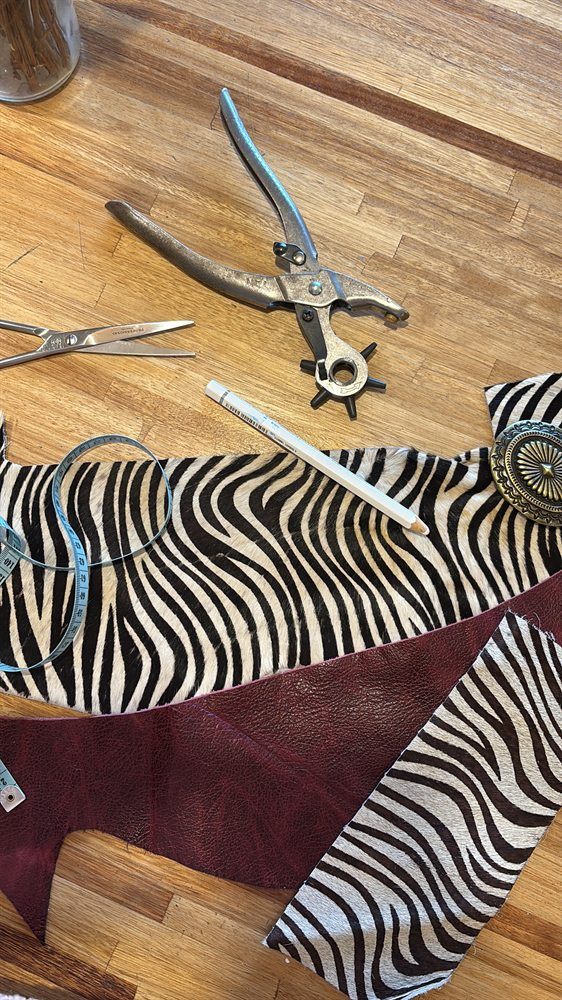
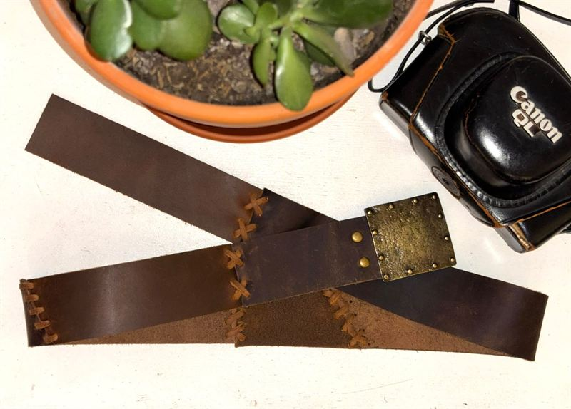
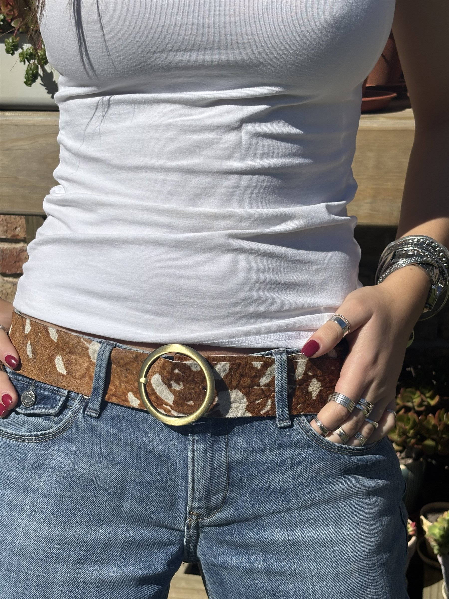

Nosotras
Del rollo de cuero a tu cintura
El taller
Decora.te nació de una idea simple: un accesorio que se adapte a la persona, y no al revés.

Trabajamos por encargo. Elegís el cuero, la hebilla y la forma de unirlos; nosotras lo marcamos, lo cortamos y lo terminamos a mano.
Armá el tuyoEl proceso
Cuatro pasos, todos a mano.




